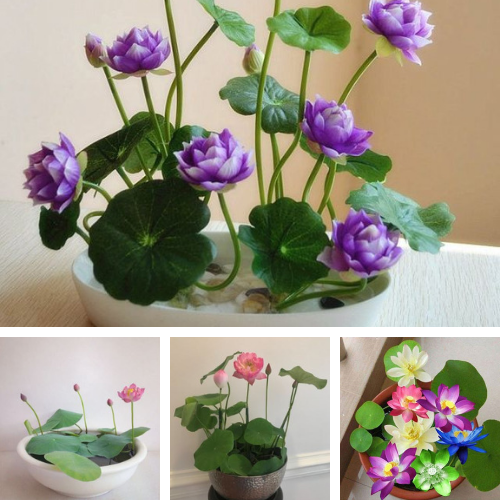
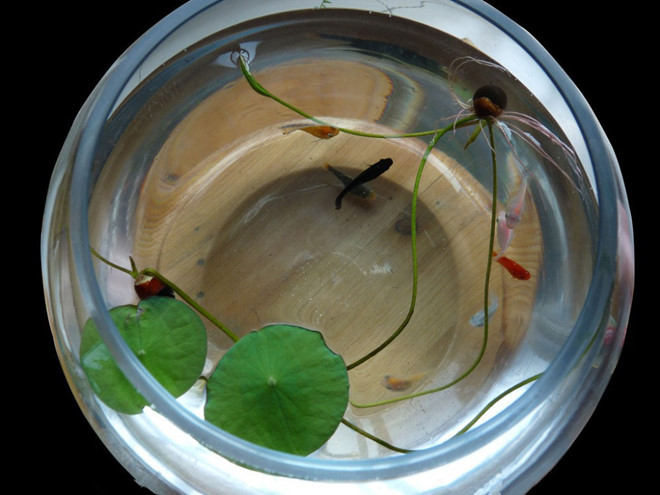
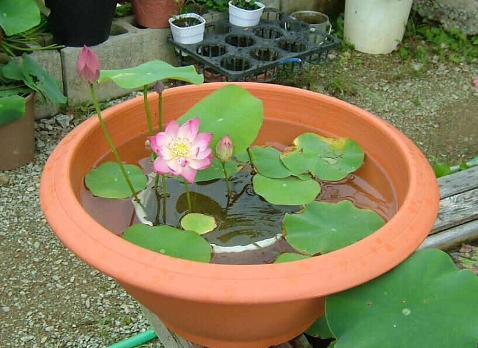

Sen mini Nhật Bản (mini lotus) tên khoa học là Nelumbo, có xuất xứ Nhật Bản. Sen mini Nhật không chỉ có màu hồng quen thuộc mà ĐA DẠNG VỚI 7 MÀU bắt mắt đỏ, vàng, trắng, xanh lá, xanh dương, hồng, tím.
Sen mini 7 màu Nhật Bản là một loại sen nước cảnh, thường được trồng bằng hạt. Giống sen này nhỏ, có thể trồng gọn gàng trong các ly chậu để bàn trang trí. Tuy nhỏ vậy song bông sen lại nở ra to và đẹp không kém so với những loại sen thông thường khác

Những chậu sen mini thủy sinh để bàn trang trí tuyệt đẹp
Sen mini Nhật có kích thước nhỏ chỉ bằng 1/3 loại sen ta, cây chỉ cao khoảng 20 – 40 cm nên không cần đến khuôn viên hay ao hồ rộng lớn để trồng. Bạn có thể trồng sen mini trong chậu, cốc, bát, chum vại nhỏ hay bình thủy tinh để trang trí bàn làm việc, ban công, cửa sổ.

Sen mini Nhật kích thước nhỏ chỉ bằng 1/3 sen ta
Đặc biệt, giống sen mini Nhật nhanh ra hoa hơn các loại sen khác, chỉ sau 3 tháng gieo trồng từ hạt bạn đã có thể ngắm những búp sen đầu tiên đang hé nở.

Theo phong thủy hoa sen mini Nhật Bản mang lại may mắn, bình an cho gia chủ nên đang được ưa thích nhiều.